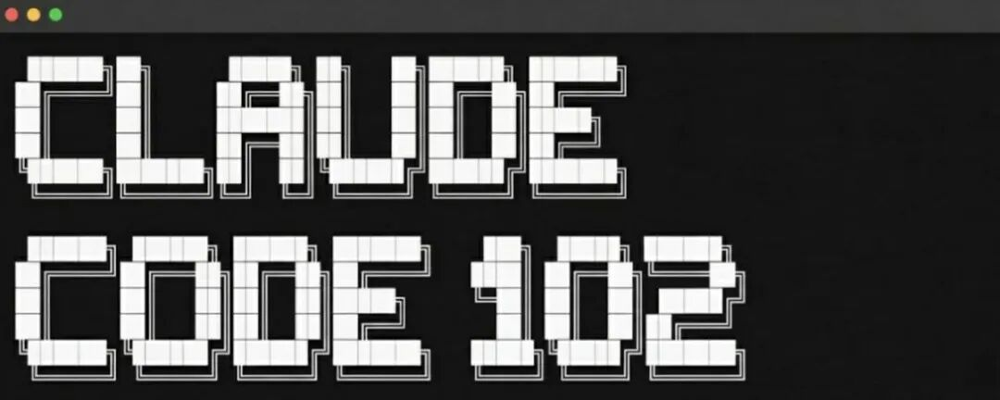

作为一名资深软件工程师，Eyad Khrais 在 Amazon、Disney 和 Capital One 等公司积累了 7 年的丰富经验，他开发的代码影响了数百万用户。
在他的 Claude Code 系列教程中，第一部分聚焦于常见误区和基础知识，获得了广泛关注。如果你尚未阅读，我建议先从那里入手，因为本篇将基于那些基础，探讨如何通过掌握底层系统，将 Claude Code 的使用从入门级提升到专业级。
如果你错过了第一部分，可以查看我之前的文章：Claude Code 101实战指南
在 102 教程中，Eyad 深入剖析了 Claude Code 的 技能（skills）、子代理（subagents）和 MCP 连接器（MCP connectors）这些核心机制，能帮助开发者更高效地构建生产级软件。
上下文窗口问题
在我们进入高级功能之前，有一个基本问题会影响其他一切。如果你使用多个 AI 编码工具，你可能假设它们都以相同方式处理上下文（剧透：它们不是）。根据 Qodo 工程团队的详细比较，Claude Code 提供“更可靠和明确的 200K 令牌上下文窗口”，而 Cursor 的“实际使用往往达不到理论上的 200K 限制”，由于“内部截断以管理性能或成本”。系统应用内部保护措施，默默减少你的有效上下文。我在第一部分中涵盖了为什么上下文如此重要。
虽然你可能会对 Cursor 的这些限制感到生气，但你必须理解不同的工具针对不同的工作流程进行优化。如果你正在处理大型、相互连接的代码库，需要模型理解你的身份验证系统如何连接到 API 路由，以及如何连接到数据库模式，那么上下文就很重要。因此，对于更大的项目，我推荐直接使用 Claude Code。Claude Code 始终如一地提供完整的 200K。
这也是为什么我即将涵盖的功能在 Claude Code 中特别有效的原因。技能、子代理和 MCP 连接都受益于可预测的上下文。
Skills：教 Claude 你的特定工作流程
Skill 是一个 Markdown 文件，用于教 Claude 如何做特定于你的工作的某些事情。当你询问 Claude 与技能目的匹配的内容时，它会自动应用它。结构非常简单。
创建一个文件夹，其中包含一个 SKILL.md 文件：~/.claude/skills/your-skill-name/SKILL.md
或者对于项目特定的 Skill，你想与团队共享：.claude/skills/your-skill-name/SKILL.md
每个 SKILL.md 以 YAML 前置事项开头：
name: code-review-standards
description: Apply our team's code review standards when reviewing PRs or suggesting improvements. Use when reviewing code, discussing best practices, or when the user asks for feedback on implementation.描述至关重要。Claude 使用它来决定何时应用 Skill。请具体说明触发条件。你也可以明确告诉 Claude “利用 x 技能”，它就会这样做。但目标是让 Claude 自己认识到何时需要利用 Skill。
在前置事项下方，用 Markdown 编写实际指令。下面是一个最小示例：
---
name: commit-messages
description: Generate commit messages following our team's conventions. Use when creating commits or when the user asks for help with commit messages.
---
# Commit Message Format
All commits follow conventional commits: - feat: new feature - fix: bug fix - refactor: code change that neither fixes nor adds - docs: documentation only - test: adding or updating tests
Format: `type(scope): description`
Example: `feat(auth): add password reset flow`
Keep the description under 50 characters. If more context is needed, add a blank line and then the body. It’s awkward to write in this format at first (since writing normally-sounding English sentences is your usual), but the difference in quality is noticeable.关键架构原则是渐进式披露。Claude 在启动时仅预加载每个已安装 Skill 的名称和描述（每个大约 100 个令牌）。完整的指令仅在 Claude 确定相关 Skill 时加载，这意味着你可以拥有数十个 Skill，而不会膨胀你的上下文。
你可以将支持文件添加到 Skill 文件夹中。如果你有广泛的参考材料，将其放入单独的文件，并在 SKILL.md 中引用它。Claude 仅在需要时读取它。
还需要注意的是，Skill 不限于代码。我见过工程师为以下内容构建 Skill：
• 特定于其模式的数据库查询模式 • 公司使用的 API 文档格式 • 会议笔记模板 • 甚至个人工作流程，如膳食规划或旅行预订
这种模式适用于任何你发现自己反复向 Claude 解释相同上下文或偏好的情况。
要查看当前加载的 Skill，直接问 Claude：“你有哪些 Skill 可用？”它会列出它们（或者去设置 → 能力 → 向下滚动，你会看到 Skill）。
Subagents（子代理）：带有隔离上下文的并行处理
Subagents（子代理）是一个单独的 Claude 实例，具有自己的上下文窗口、系统提示和工具权限。这是 Claude Code 架构真正脱颖而出的地方。当 Claude 委托给子代理时，该子代理独立运行，并将摘要返回到主对话。
重要的是要记住，上下文退化发生在上下文窗口的 45% 左右。子代理允许你将复杂的研究或实现任务卸载到新鲜的上下文中，然后仅带回相关结果，这意味着你的主对话保持干净。
Claude Code 包括三个内置子代理：
• Explore：一个快速的只读代理，用于搜索和分析代码库。Claude 在需要理解你的代码而不进行更改时委托这里。当正确使用时，Claude 指定彻底性：快速、中等或非常彻底。 • Plan：一个研究代理，用于计划模式期间在呈现计划之前收集上下文。它调查你的代码库并返回发现，以便 Claude 做出明智的架构决策。 • 通用：一个强大的代理，用于需要多个依赖步骤或复杂推理的复杂、多步骤任务。Claude 在任务需要多个依赖步骤或复杂推理时委托这里。
创建自定义 Subagents（子代理）
就像你需要自定义技能一样，我强烈推荐创建自己的自定义子代理。在 Claude Code 中运行 /agents 以查看所有可用子代理并创建新代理。
要手动创建一个，将 Markdown 文件添加到 ~/.claude/agents/（用户级，在所有项目中可用）或 .claude/agents/（项目级，与团队共享）。
一个示例结构：
---
name: security-reviewer
description: Reviews code for security vulnerabilities. Invoke when checking for auth issues, injection risks, or data exposure.
tools: Read, Grep, Glob
---
You are a security-focused code reviewer. When analyzing code:
1. Check for authentication and authorization gaps 2. Look for injection vulnerabilities (SQL, command, XSS) 3. Identify sensitive data exposure risks 4. Flag insecure dependencies
Provide specific file and line references for each finding. Categorize by severity: critical, high, medium, low.工具字段控制子代理可以做什么。对于只读审查者，限制为 read、grep 和 glob 命令。对于实现代理，包括 write、edit 和 bash 命令。
Subagents（子代理）如何通信
这是大多数人忽略的部分。子代理不会直接与其他子代理共享上下文，因为它们是隔离运行的。通信通过委托和返回模式发生：
• 主代理识别适合委托的任务 • 主代理使用特定提示描述任务来调用子代理 • 子代理在其自己的上下文窗口中执行 • 子代理将发现/动作的摘要返回给主代理 • 主代理整合摘要并继续
摘要是关键。一个设计良好的子代理不会将整个上下文转储回来。这就是为什么子代理描述和系统提示需要明确输出格式的原因。
对于复杂的工作流程，你可以链式子代理。主代理协调：
Main Agent
|── Delegates research to Explore subagent │
└── Returns: "Found 3 relevant files: auth.py, middleware.py, routes.py"
|── Delegates implementation to custom implementer subagent │
└── Returns: "Added password reset endpoint, updated 2 files"
└── Delegates testing to custom test-runner subagent
└── Returns: "All 12 tests passing, coverage at 94%"每个子代理为其特定任务获得新鲜上下文。主代理仅持有摘要，而不是完整的探索历史。这防止了杀死长编码会话的上下文污染。
一个重要约束：子代理不能生成其他子代理。这防止了无限嵌套并保持架构可预测。
实际的 Subagents（子代理）模式
• 大型重构：让主代理识别所有需要更改的文件，然后为每个逻辑组启动一个子代理。每个子代理处理其范围并返回摘要。主代理永远不需要同时持有每个文件的完整上下文。 • 代码审查管道：创建三个子代理：style-checker、security-scanner、test-coverage，并并行运行它们针对 PR。每个返回一致格式的发现 → 主代理合成到一个单一审查中。 • 研究任务：当你需要理解代码库的不熟悉部分时，使用特定问题委托给 Explore。它返回相关文件和模式的精炼地图，保持你的主上下文专注于实际实现工作。
MCP 连接器：永不离开 Claude
MCP（Model Context Protocol）是一种标准化方式，让 AI 模型通过统一接口调用外部工具和数据源，而不是为每个自定义集成。你不必进入 GitHub，你不必进入 Slack、Gmail、Drive 等。你可以通过 MCP 服务器让 AI 通过 Claude 接口“对话”所有这些。
添加连接器的命令：
# HTTP 传输（推荐用于远程服务器）
claude mcp add --transport http <name> <url>
# 示例：连接到 Notion
claude mcp add --transport http notion https://mcp.notion.com/mcp
# 带认证
claude mcp add --transport http github https://api.github.com/mcp --header "Authorization: Bearer your-token"或者如果你想在 Web 应用中使用超级简单的方法，设置 → 连接器 → 找到你的服务器 → 配置 → 授予权限，你就设置好了。
以下是 MCP 服务器在过去 6 个月中为我做的一些示例：
• 从问题跟踪器实现功能：“添加 JIRA 问题 ENG-4521 中描述的功能” • 查询数据库：“从我们的 PostgreSQL 数据库中找到上周注册的用户” • 集成设计：“基于新的 Figma 设计更新我们的电子邮件模板” • 自动化工作流程：“创建 Gmail 草稿，邀请这些用户参加反馈会议” • 总结 Slack 线程：“工程频道中关于 API 重新设计的团队决定了什么？”
力量不是任何单一集成。一个过去需要五个上下文切换的工作流程（检查问题跟踪器、查看设计、审查 Slack 讨论、实现代码、更新票据），现在发生在一个连续会话中。你全天候处于心流状态。
我推荐连接以下 MCP 服务器：
• GitHub：仓库管理、问题、PR、代码搜索 • Slack：频道历史、线程摘要、消息搜索 • Google Drive：文档访问，用于实现期间的参考 • PostgreSQL/数据库：直接查询，而不离开 Claude • Linear/Jira：问题跟踪集成
要查看当前的 MCP 连接，在 Claude Code 中运行 /mcp。
第三方 MCP 服务器未由 Anthropic 验证，因此要小心。对于敏感集成，审查服务器的源代码或使用服务提供商的官方连接器。
复合效应
这就是一切结合的地方。一个知道你的代码库模式的技能 + 一个处理测试的子代理 + 到你的问题跟踪器的 MCP 连接 = 一个无与伦比的系统。
技能编码你的团队惯例。你不必担心上下文。子代理在处理复杂子任务时保持你的主对话干净。MCP 连接消除碎片化注意力的上下文切换。
我观察到的从 Claude Code 中获得最多的工程师不是将其用于一次性任务，而是将其视为一个系统来倍增他们的工作能力。他们投入时间配置技能、定义子代理、连接服务。这种投资然后在每个后续任务中合理地支付股息。
如果你害怕从哪里开始，就从一个技能开始，用于你反复解释的东西。或者创建一个单一代理。然后测试并从那里继续。没有必要一次性尝试一切来压倒自己。
TLDR
上下文窗口并不平等。Claude Code 始终如一地提供 200K 令牌。Cursor 在实践中往往截断到 70-120K，由于内部保护措施。这对大型代码库很重要。
技能教 Claude 你的特定工作流程。创建 ~/.claude/skills/skill-name/SKILL.md 带有 YAML 前置事项（名称、描述）和 Markdown 指令。Claude 在相关时自动应用它们。
子代理为复杂任务提供隔离上下文。每个获得自己的 200K 窗口。内置：Explore、Plan、通用。创建自定义的在 ~/.claude/agents/。它们通过委托和摘要通信，而不是共享上下文。
MCP 连接器消除上下文切换。连接到 GitHub、Slack、数据库、问题跟踪器。将通常需要五个标签的工作流程链式到一个连续会话中。命令：claude mcp add --transport http <name> <url>
这些复合。技能编码模式，子代理处理子任务，MCP 连接服务。一起，它们构建一个随着使用而改进的系统。